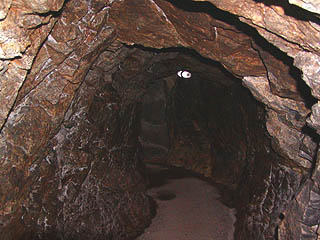

2004.4.
中野不動尊/福島県福島市
福島市の飯坂温泉に程近い山中にある中野不動尊は日本三不動尊だそうだ。初耳だが。 洞窟巡りがあると聞き、行ってみた。
まず、境内に入ると嫌が応にも目立つ真紅の建物。しかも二階建て。大日堂である。 昭和55年に建ったという大日堂、ニ層の塔というよりはお堂の上にお堂が乗っているようなフォルムの建物で、私はこーゆーアンバランスなの好きです。
そこが面白いんです。 さて、一階には洞窟の入口がある。というか、一階は洞窟の入口でしかない。 というわけで、いよいよ洞窟巡りのスタートである。 洞窟巡り入口付近。三十六童子が祀られているという。 数メートル直進すると突き当たりで道は左右に別れる。 精々数メートル程度の一本道の洞窟だろうとたかを括っていたがどうやら事はそう簡単なようではないようだ。ココロしてかからねばなるまい。 取り敢えず右折してみる。 洞窟内部は所々照明があり、真っ暗ではないにせよかなり暗い。 内壁は基本的にコンクリートで補強されている。 メインの通路から枝別れして小さなスペースがあり、そこに三十六童子が各々安置されている。 この安置されているスペースを単座と呼ぶらしい。ほとんどの照明は単座にしかないので単座に導かれるように通路を進んでいく。 その単座の様子。みなブロンズの小さな像だった。 ところで日光の当たらない場所で植物はどれくらい持つのだろうか？ さらに先へ進む事数十メートル（100メートル位あったのだろうか？）、出口に至る。 出たところは大日堂とは滝をはさんで隣にあった寂光門というところ。門というより岩壁に破風屋根が飛び出しているという何とも不思議なモノ。 出口を出たところから目の前には滝、そして入口の大日堂が見える。 つまり大日堂から滝の裏を通って寂光門から出たことになる。 さて。 先程大日堂の入口を入って最初のT字路の左側に行っていなかったので今度はそちらを歩いてみよう。 寂光門から再び大日堂に戻り、またまた洞窟巡りを始める。  こちらは手掘りの岩盤が露出していて雰囲気満点だ。 勿論途中には単座があり、童子像が祭られている。 さらに通路は二手に別れ、それぞれに単座がある。行ったり来たりしながら、何とか三十六童子全部を見る事が出来た。 二手に別れた先の出口は一方は入って来た大日堂のすぐ隣、もう一方は少し大日堂から離れたところだった。 大体の通路の構成はこんな感じだったと思います。あ、単座の位置とか通路の長さとかウルトラアバウトだからね。 この洞窟、元々複数あった手掘りの修行洞窟をつなげたそうだ。いやはや御苦労さんです。 で、楽しい洞窟巡りの後は本堂へ。あ、ここのお寺は密教系のお寺かと思ったら、明治36年に曹洞宗に改宗したそうで。 本堂は一見、普通〜な佇まいだが組み物を見てビックリ。凄い塗りです。 さらに拝殿の天井を見上げてビックリ！ 様々な神様仏様が一同に。 マイフェイバレットはこちらのお方、逆さにしても顔に見えます（ウソ）。
2004.4.
珍寺大道場 HOME